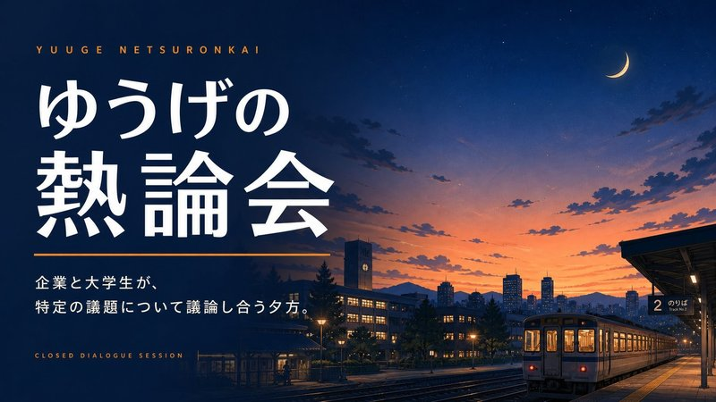
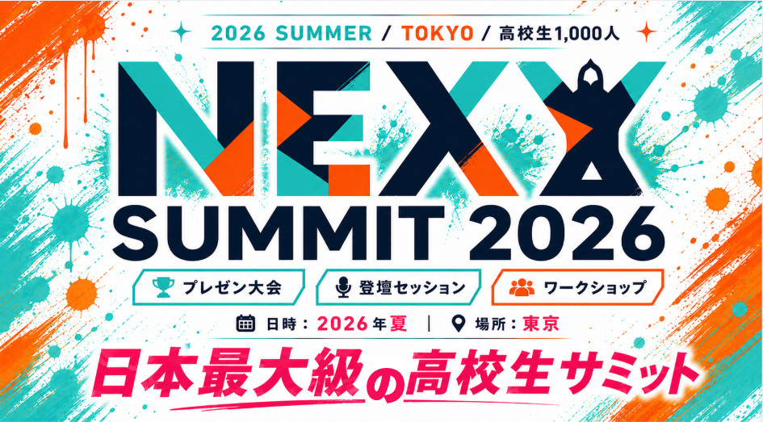
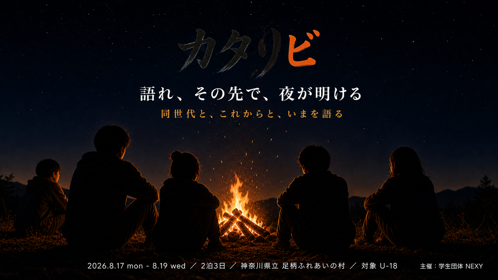
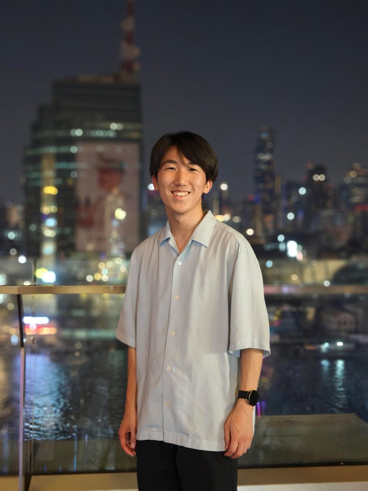

環境は、意識を変えないと変わらない。
SNSを頑張ろうと思った。

今、何かに挑戦したいと思っていても、同じ熱量で語り合える仲間に出会う機会は多くありません。
すごい学生は確かに存在する。しかし、その学生同士が本気でつながり、刺激し合える場はほとんどないのが現状です。
NEXYは、挑戦している学生が集まり、活動、悩み、葛藤、将来について本音で語り合うことで、新たな一歩につながる"きっかけ"を生み出すコミュニティです。
ここで生まれた出会いが、次の挑戦へとつながる。そんな「思いの連鎖」を当たり前にしていきます。
＼ NEXYの活動・イベントについて ／







僕はこれまで、ロボット、起業、教育など、さまざまな挑戦をしてきました。その中で強く感じたのは、「挑戦は人との出会いで加速する」ということです。
実際に、自分の人生を大きく変えてくれたのは、環境と人でした。同じように何かに本気で取り組んでいる人と出会い、語り合い、刺激を受けることで、自分の可能性が広がっていく感覚がありました。
一方で、そうした出会いは、意図的に作らないと生まれにくいのも事実です。だからこそ僕は、挑戦している人たちが交わり、新たなきっかけが生まれる場を作りたいと思い、NEXYを立ち上げました。
NEXYは、ただのコミュニティではありません。それぞれの「やりたい」が交差し、次の挑戦へとつながっていく場所です。ここでの出会いが、誰かの人生を変えるきっかけになる。そんな連鎖が生まれる場を、本気で作っていきます。
クリックして詳細な実績・経歴を表示



深夜の語り場・朝食会などのイベントに参加して、まずNEXYの雰囲気を体感してください。
NEXYメンバーが集まるSlackで、日頃から「思い」をシェアし合えます。
もっと深く関わりたい方はGrow層として運営に参加する道もあります。